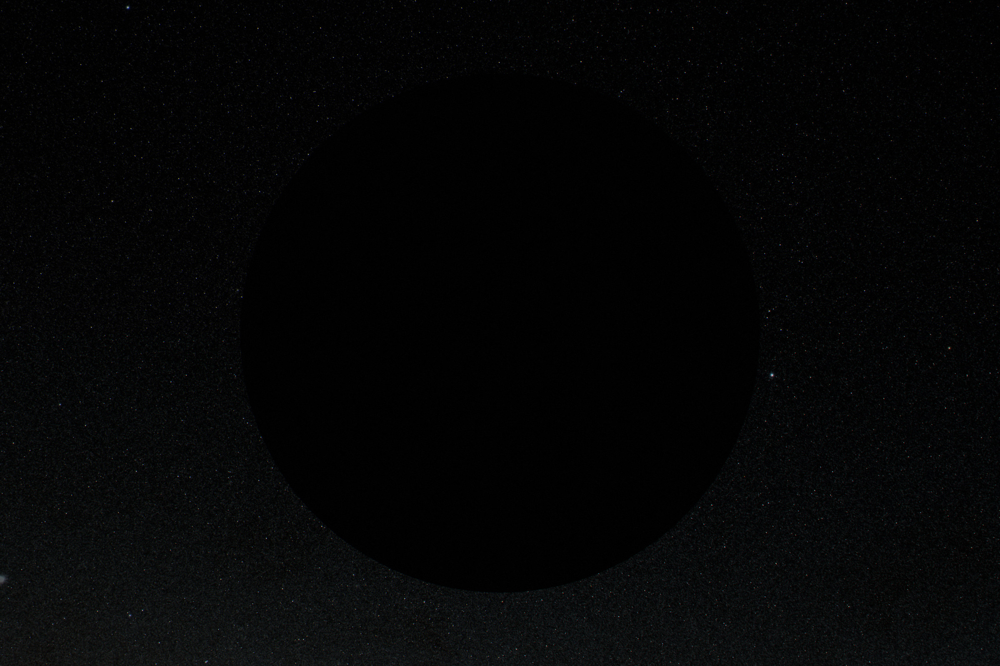
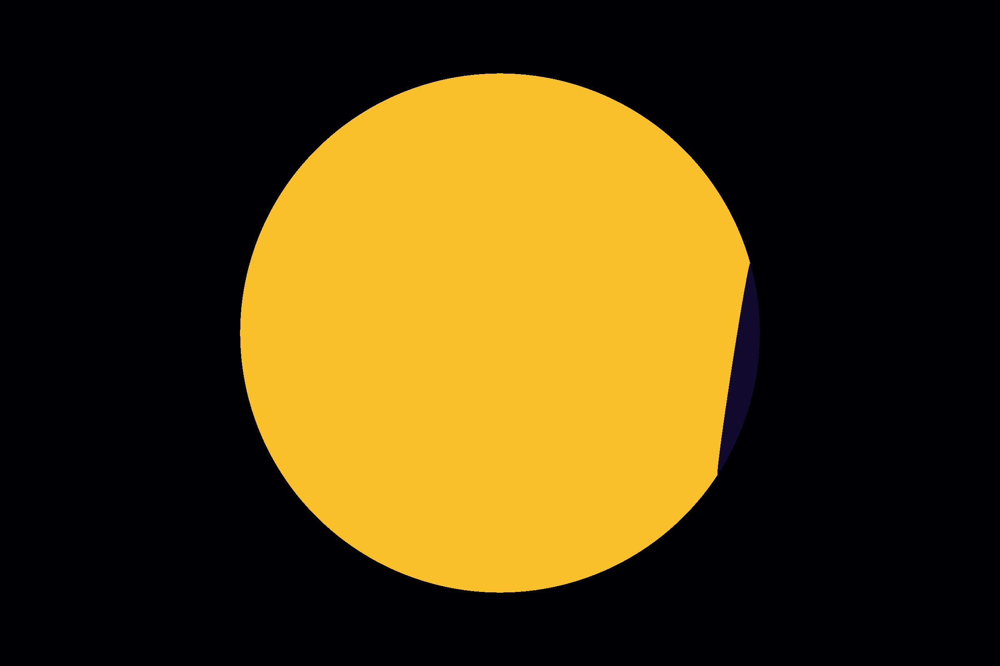

Closing the sphere
A swarm that catches part of the Sun is easy to picture. One that catches all of it has to solve three problems: sails on orbits that must cross, a sphere that can only shed heat outward, and a planet that still needs its sunlight.
In short
- Two layers. Compute sails tile the sphere at 0.95 AU, except for a cap 23° in radius round the line from the Sun to Earth. There, mirror sails at 0.98 AU keep pace with Earth, hand their sunlight back to the compute sails, and show Earth only their cold backs.
- Orbits must cross, and that costs π/2. Every orbit round the Sun traces a great circle, and any two great circles meet. A theorem proved in 2017 says bands covering a sphere need total width at least half its circumference, so closing it takes π/2 times the sails that would tile it. Sails behind an overlap turn edge-on and idle.
- A closed sphere runs hot. All of the Sun’s 3.8×10²⁶ W must leave through the sails’ backs. At 0.95 AU the film reaches 419 K and the chips about 155 °C, so each watt computes about half what it would in a sparse swarm. 0.95 AU is as far out as the shell can go without enclosing Earth.
- Closure is for control, not computing. The closed sphere computes 1.9×10⁴⁰ FLOP/s, a little less than an open swarm that leaves a gap round Earth. What it buys is that every photon leaving the inner solar system leaves through a window the swarm chooses to open.
- Windows are mirrors turned edge-on. Earth’s is 20,300 km in radius and follows it round its orbit. Each mirror crossing it flips edge-on in about ten minutes, turned by a 50 kg flywheel.


The layout
The compute sails described in the sail note tile the whole sphere at 0.95 AU, except a cap round the line from the Sun to Earth, 23.07° in radius (the angle whose cosine is 0.92), 4.0% of the sphere. They fly in nested bands spread over a thin layer, so that the gaps in one band are covered by the next. Every sail faces the Sun.
The cap is a second layer, at 0.98 AU, of mirror sails that keep pace with Earth. Their inner faces reflect 96% of the sunlight that reaches them back into the swarm, where the compute sails catch it. Their outer faces, the only part of the swarm Earth can see once it is closed, are cold.
Earth gets its sunlight through a window: a hole in the cap where the mirrors in Earth’s line of sight have turned edge-on. The Moon gets its own. Any other world, spacecraft or telescope can be given one the same way.
| Value | |
|---|---|
| Compute shell radius | 0.95 AU, about 7,000 km thick |
| Mirror cap | 0.98 AU, 23° round the Sun–Earth line |
| Sails flown | 5.2×10¹⁸, of which a third idle at any moment |
| Pods | 3.3×10¹⁸ MW-class, 6% of chip power |
| Mass | 5.67×10²² kg (sails 4.1×10²², pods 1.6×10²²) |
| Film temperature | 419 K; chips about 155 °C |
| Computing | 1.9×10⁴⁰ FLOP/s |
| Light leaving on purpose | Earth’s window 4.8×10⁻⁹, the Moon’s 2.8×10⁻⁹ |
| Light leaving as the cap’s back glow | 4×10⁻⁵, as 170 K infrared |
Why close it at all
An open swarm can be large without enclosing anything. The page’s earlier default left the sky round the Sun–Earth line and round L3 empty, so Earth never saw a sail’s hot back, and caught 83% of the Sun. It worked, at two costs. Earth absorbed 47 W/m² of the swarm’s infrared, twelve CO₂ doublings, which a shade at L1 had to cancel by taking a fifth of Earth’s sunlight. And trading sunlight for infrared costs rain: the swap would have cut global rainfall by about 30% (Earth inside the swarm).
Closing the sphere removes both. Earth sees only the cap’s cold back, 0.56 W/m², cancelled by narrowing its window by a quarter of a per cent. And it keeps its full sunlight. The computing is about the same: the closed sphere catches 18% more light but its hotter chips compute 19% less per watt, so it ends 5% below the open swarm, 1.88×10⁴⁰ FLOP/s against 1.98×10⁴⁰.
So closure is not for computing. It is for control. Once closed, every photon that leaves the inner solar system leaves through a window the swarm chooses to open, and Earth’s sunlight becomes a dial.
Orbits must cross
Seen from the Sun, every orbit traces a great circle on the sky, and any two great circles cross at two points. So sails that cover every direction must pass one another somewhere. Where they do, they fly at slightly different distances from the Sun, and the one behind is in the other’s shadow.
A shaded sail cannot just stay face-on. It would waste nothing, since it gets no light, but it would sit in front of the lit sail’s back and trap its heat. So a sail behind an overlap turns edge-on and idles until it is past, the same trick that opens Earth’s window. The cost is the sails themselves: more must be flown than are lit at any moment.
The least it can cost
Fly the sails as bands in formation, each band following a great circle round the Sun. How much band area does it take to cover a sphere? The answer is a theorem. László Fejes Tóth conjectured in 1973 that zones covering a sphere (a zone is the band between two parallel planes equally far from the centre) must have angular widths adding up to at least π. Zilin Jiang and Alexandr Polyanskii proved it in 2017. Their area is then at least
2πR² · π = (π/2) · 4πR²
that is, π/2 times the sphere’s area. Bands whose centre lines all pass through the same two poles, like lines of longitude, meet the bound exactly: they tile the equator without overlapping and overlap only toward the poles.
Along the way: how many sails are idle at partial coverage
Bands sharing an axis that cover a share f₀ of the equator cover a share
F = f₀ · arccos f₀ + 1 − √(1 − f₀²)
of the sphere, with total area πf₀/2 of it. The model inverts this numerically (bandArea). Sails flown for every sail lit: 1.02 at 10%, 1.13 at half, 1.36 at 90%, 1.51 at 99%, π/2 = 1.57 closed.
Independent orbits, overlapping at random, would do far worse. If each new sail lands at a random spot, the share covered after flying area A is 1 − e−A, so covering F needs −ln(1 − F) times the sphere: 4.6 times at 99%, and about 10 times to close to within the last ten-thousandth.
bandArea). Hover for values.What it costs: 57% more sails at closure, 5.2×10¹⁸ flown against 3.3×10¹⁸ lit, and 5.67×10²² kg in all. The computing is unchanged, because the same light reaches the same number of lit chips. The idle sails carry chips too, so chips per kilogram are unchanged, and so is the pace of the fabs. The extra mass is why Mercury’s core is needed (Taking Mercury apart).
Bands in formation
Each band is a formation of sails on parallel orbits. A sail on its own would follow its own great circle; to hold a band tens of thousands of kilometres wide, the sails off its centre line tilt by 3–4°, so that sunlight pushes them slightly out of their orbital planes. That costs 0.2% of their light. The bands are about 70,000 km wide, so half the circumference at 0.95 AU, π × 0.95 AU, takes about 6,400 of them.
Crossing bands fly at radii about a kilometre apart, so the compute shell is about 7,000 km thick at 0.95 AU, about 0.005% of its radius. Thinness matters for three reasons:
- Gaps line up. While the sphere is partly built, a line of sight that passes a gap in one band must pass the matching gap in the others. In a thin shell they line up for slanted lines too, so each band dims what lies behind by (1 − f), not more.
- The Sun is not a point. Light from the Sun’s edge arrives 0.27° off radial. Across a 7,000 km layer that shifts a shadow by about 30 km, small against bands 70,000 km wide.
- Every lit sail’s back still sees open space while the sphere is open, so it can radiate.
The model does not simulate the formation flying itself: collision avoidance between bands a kilometre apart, the timing of each sail’s turn as it passes behind another, and the drift of a band over centuries. Those are engineering problems of a familiar kind, scaled up enormously, and they are listed among the open questions below.
Why it runs hot, and why 0.95 AU
An open sail sheds heat from both faces. A closed sphere sheds heat only from its outside: the fronts face other fronts across the cavity and trade radiation back and forth, so in balance all of the Sun’s power leaves through the backs:
L☉ = 4πr² (1 − cap) · εback σ T⁴
With L☉ = 3.828×10²⁶ W, r = 0.95 AU, the cap’s 4% and εback = 0.9, that gives 419 K. A perfect black back would still run at 408 K. A sail alone at the same distance runs much cooler: 332 K with a glass front that radiates too, 382 K with the infrared-dark front the sails carry while the sphere is open. Between sparse and closed the model interpolates T⁴ linearly in coverage, as a cavity whose gaps close.
swarmAt, closedFilmT, closedFactor). Hover for the film and chip temperatures.Farther out would be cooler, since temperature falls as r−½. But the shell cannot reach Earth’s orbit. Enclosing Earth would put it inside a cavity at about 330 K. The shell must also leave room outside it for the cap and for its own thickness, and Earth comes within 0.983 AU of the Sun. So 0.95 AU is as far out as it can go, and it pays for being there: chips at about 155 °C, cells converting over a quarter less than at 85 °C, logic spending half as much again per operation. Each watt of sunlight computes 48% of what it would on a cool sail.
A colder outer layer, a second shell catching the inner one’s heat (a Matrioshka brain), could run at 100 K from 15.6 AU or 50 K from 62 AU. It is a different machine with far more mass, and it is not in the model.
Built symmetric, stage by stage
The page shows the sphere at seven stages. At every one it is the same sphere, equally full in every direction, at coverage f: the share of the Sun’s light that hits a sail. That choice keeps Earth’s view simple at every stage, and it is how a swarm limited by its rate of production would most naturally grow.
- The cap is mirrors from the start, flown at the same coverage as everywhere else, so Earth never sees a compute sail’s back.
- Earth’s sunlight is untouched at every stage: any sail crossing the line from the Sun to Earth turns edge-on as it passes.
- While the sphere is open, the fronts are dark in the infrared (switchable emittance, ε 0.1, as spacecraft radiators can do today), because Earth sees the far side’s fronts through the gaps. Once closed, the fronts face each other and are switched back.
| Coverage | Year | Sails flown | Film | Computing | Heat on Earth |
|---|---|---|---|---|---|
| 10⁻⁶ | 2116 | 3.4×10¹² | 382 K | 2.8×10³⁴ FLOP/s | 0.00003 W/m² |
| 10⁻⁴ | 2129 | 3.4×10¹⁴ | 382 K | 2.8×10³⁶ | 0.003 |
| 1% | 2141 | 3.5×10¹⁶ | 382 K | 2.8×10³⁸ | 0.28 |
| 50% | 2178 | 1.9×10¹⁸ | 402 K | 1.1×10⁴⁰ | 8.6 |
| 99% | 2342 | 4.9×10¹⁸ | 418 K | 1.9×10⁴⁰ | 0.94 |
| Closed | 2361 | 5.2×10¹⁸ | 419 K | 1.9×10⁴⁰ | 0.56 |
What each stage looks like from Earth, and what the heat does to Earth’s climate, is in Earth inside the swarm.
The mirror cap
Why the part Earth sees must be mirrors
From 1 AU, Earth can see the outside of a sphere of radius 0.95 AU only within arccos 0.95 = 18.2° of the line toward the Sun. Whatever flies there shows Earth its outer face. With compute sails there, that face is their 419 K backs, and Earth would receive about 540 W/m², more than twice the sunlight it absorbs. Compute sails with insulated backs, radiating only inward, would run at about 489 K, far too hot for chips. Mirrors that hand their sunlight on to the compute sails behind them lose nothing: the light is caught anyway, just one bounce later.
The cap is 23° rather than 18° because Earth moves. Its orbit reaches 1.017 AU, from where arccos(0.95/1.017) = 21° of the shell is in view, and 23° leaves room for the mirrors’ drift.
An orbit that sets the material
The cap must keep pace with Earth, going round the Sun once a year at 0.98 AU. A body there on a circular orbit would go round faster. It slows to Earth’s pace only if sunlight carries part of its weight: a share
β = 1 − 0.98³ = 0.059
For a mirror that fixes its areal mass at 26 g/m². Each element flies its own orbit, inclined so that it drifts north and south through the cap once a year, and the elements are phased so that the cap stays full. Its edge is soft over about a degree. The cap’s mirrors share Earth’s eccentricity, so the cap stays about 3 million km sunward of Earth all year.
Aluminium, not silver
The inner face is aluminium under a dielectric stack, 96% reflective. Silver would reflect more, but silvering 10²² m² takes far more silver than Mercury holds, about 10¹⁶ kg; aluminium is 5–7% of the crust. The whole 26 g/m² is 40 layers of aluminium foil, each 0.24 µm thick and 0.65 g/m²: the innermost carries the mirror coating and the rest insulate.
The mirror absorbs 4% of the sunlight and its inner face runs at about 500 K. Each foil face has an emissivity of 0.03, so only 1.4 W/m² leaks through the stack to the outer layer, which sits at about 170 K. Earth, seeing the cap over a disc 78° in radius, receives on average 0.40 of that: 0.56 W/m². The cap weighs 2.8×10²⁰ kg, 4.4×10²⁰ kg with its share of the overlap, under 1% of the swarm.
Windows
A window is a set of mirrors turned edge-on while they cross a line of sight. Earth’s is 20,300 km in radius: Earth’s own radius, 6,371 km, plus the spread of the Sun’s disc, 0.27° either side, over the 3.0 million km from the cap to Earth. With that margin every point on Earth sees the whole Sun. The Moon’s window is 15,700 km in radius and crosses the cap once a month.
src/ui/windowSim.js). Each mirror is 279 m across, so the window is 145,000 mirrors wide and about 17 billion are edge-on at any moment.How fast mirrors cross
The cap’s mirrors drift north and south through it once a year on orbits inclined by up to 23°. A mirror crossing the Sun–Earth line moves across it at up to 0.4° a day, 12 km/s, so it spends about an hour in Earth’s 40,600 km window, then turns back. Mirrors on flatter orbits cross more slowly; the few within 0.008° of the line stay edge-on for good. The window can change size or shape within minutes.
How a mirror turns
Sunlight pushes on a mirror at 0.98 AU with 9.4 µN/m², 0.74 N on a 279 m element of 2.0 tonnes. Tilting the mirror tilts the push, which is how it steers its orbit. Light alone turns it only slowly: strips that switch their reflectivity, on 5% of its area, give 1.3 N·m, a 90° turn in about two hours, and the torque fades near edge-on, where the light stops pushing.
So each mirror carries a flywheel, about 50 kg and 10 m across with its rim at 275 m/s, driven by a small solar cell. Spinning the wheel up turns the mirror the other way. A ten-minute flip needs 6.9×10⁴ N·m·s of angular momentum and 229 N·m at its peak, and the wheel ends at its starting speed, so no energy is lost beyond friction. Light pressure on the reflectivity strips unloads any slow drift. No propellant is used anywhere. Each mirror starts turning before it reaches the window’s edge and finishes as it enters.
Windows elsewhere
Compute sails on the line to any target turn edge-on as they pass through it. Mars, 0.57 AU beyond the shell, needs a window 260,000 km in radius to see the whole Sun: 8×10⁻⁷ of the swarm’s light. A spacecraft or a telescope needs a pinhole. Habitats near Earth’s orbit can each have a window; habitats farther out are better served by lasers (Earth inside the swarm).
How complete the enclosure is
Everything is caught except what leaks out on purpose:
- Earth’s window passes π × (20,300 km)² of a sphere 0.98 AU in radius: 4.8×10⁻⁹ of the Sun’s light. The Moon’s adds 2.8×10⁻⁹.
- The cap’s back sheds 1.4 W/m² over its 1.1×10²² m²: 4×10⁻⁵ of the Sun’s output, as 170 K infrared.
So the model takes the closed swarm to catch 0.99996 of the Sun’s light. The cap is part of the enclosure, not a gap in it: its mirrors return what they catch to the compute sails.
The alternative: a shade near Earth
What Earth needs is that every line of sight from it toward the swarm ends on something cold. The cap does that inside the swarm. A shade close to Earth does it too, and its area falls with the square of its distance from Earth. Is it better?
- Where it sits. The swarm’s infrared, about 1,400 W/m² from a 419 K sphere filling 73° of Earth’s sky, pushes on a reflecting shade with 6.8 µN/m². On the cap’s 26 g/m² foil, that balances Earth’s pull, less the Sun’s tide, about 1.02 million km sunward of Earth. The centre hovers under active control; the edges, beyond Earth’s Hill sphere, co-orbit like the cap.
- Size. It must hide the 0.95 AU sphere, 71.8° from Earth in every direction: a radius of about 3.1 million km, 3.0×10¹⁹ m², 7.9×10¹⁷ kg. That is about 500 times lighter than the cap with its overlap.
- Holes. Earth’s sunlight needs a hole of about 11,000 km radius at that distance; the Moon needs a moving one. Through the hole Earth glimpses the hot swarm over about a degree, about 0.1 W/m².
- Finer control. A shadow cast from 1 million km blurs over 9,400 km, against 28,000 km from the cap.
- The swarm behind it sees the shade fill 19% of its view along the Sun–Earth line; reflected straight back, its own heat would warm those sails by about 22 K, unless the shade’s facets are tilted about 40° to throw it past the swarm’s edge.
The page keeps the cap for one reason. The shade is opaque, and it has to be up by the time the swarm catches 0.1–1% of the Sun, before the hot backs facing Earth add several W/m². From then on Earth’s sky within 72° of the Sun would be black for most of the build, where with the cap it glows (Earth inside the swarm). Mass is roughly a wash: the shade saves the cap’s mirrors, but whatever fills the cap’s place in the shell then weighs more per square metre than mirrors do, unless it too is plain mirrors.
Why a filter that passes sunlight and reflects infrared does not work
A shade transparent to visible light and reflecting the swarm’s infrared would let Earth keep its sunlight without a window. Low-emissivity coatings reflect about 97% of 3–40 µm light. The 3% they absorb, about 43 W/m², heats the filter, which radiates from both faces equally: about 21 W/m² toward Earth, about 7 W/m² averaged over Earth’s surface, more than a CO₂ doubling. More layers would insulate it but kill the transparency. It would need about 99.9% reflection over 3–40 µm with no visible loss. A filter close to Earth that turns infrared away would also turn back Earth’s own 10 µm emission along the same paths.
The rest of the solar system
- Venus sits inside the cavity. It can no longer cool to space: it radiates into a sky at about 419 K. Its effective temperature rises from about 230 K to about 428 K, and its surface, already 737 K, heats further. Venus needs a window or a sunshade of its own to stay as it is.
- Mars gets the shell’s infrared, 586 W/m², the same energy as its sunlight today. Its dust absorbs infrared better than sunlight, so it warms from about 213 K to 225 K (equilibrium values). A window adds sunlight on top: about 261 K, twice today’s energy.
- Icy moons absorb infrared far better than sunlight: Europa’s equilibrium temperature rises from about 93 K to about 122 K.
- The solar wind stops, absorbed by the shell everywhere except the windows, and with it the heliosphere. Galactic cosmic rays reach 1 AU with the spectrum Voyager measured outside it (Earth inside the swarm).
- Mercury, inside the shell, is mostly gone.
Open questions
- Formation flying at this scale. Thousands of bands a kilometre apart, each sail turning edge-on at the right moment, for centuries; collision avoidance and the capture of dead sails.
- The cap’s orbits. Phasing billions of inclined elements so the cap stays full and its edge soft, under Earth’s and the Moon’s pull.
- Switchable infrared fronts over 10²³ m² of film while the sphere is open.
- The cavity model. The model interpolates T⁴ in coverage between sparse and closed; a radiosity calculation of the partly built sphere would refine the middle stages.
Sources and code
- Project note:
docs/closed-swarm.md; the earlier open layouts indocs/full-swarm.mdanddocs/earth.md. - Model:
src/model/hybrid.js(bandArea,swarmAt,closedFilmT,closedFactor,FIXED.capFrac,capKgM2,capIR,closedRoom); tested intest/hybrid.test.js, closed-swarm section. The window simulation:src/ui/windowSim.js. - Jiang and Polyanskii (2017), “Proof of László Fejes Tóth’s zone conjecture”, Geometric and Functional Analysis 27, arXiv:1703.10550.
- Fejes Tóth (1973), “Exploring a planet”, American Mathematical Monthly 80.
- Ott, Grebogi and Yorke (1990), “Controlling chaos”, Physical Review Letters 64.
- Solar luminosity: IAU 2015 Resolution B3 (3.828×10²⁶ W).